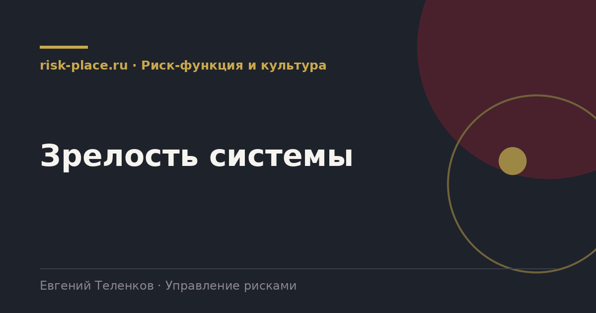

risk-
risk-Собрать доказательства
- По каждому элементу конкретные документы, протоколы, расчеты, записи. Мнение доказательством не является
Главная · Библиотека · Риск-функция и культура · Зрелость системы
Библиотека · Риск-функция и культура
Оценка зрелости отвечает на вопрос, который рано или поздно задает собственник, работает ли это вообще.

Универсальная шкала, применимая к любому элементу системы.
| Уровень | Признаки |
|---|---|
| 1. Отсутствует | Деятельность не ведется или ведется эпизодически отдельными людьми |
| 2. Начальный | Есть документы, работа ведется формально, результат не используется в решениях |
| 3. Определенный | Процесс описан и выполняется регулярно, результаты доходят до руководства |
| 4. Управляемый | Процесс измеряется показателями, результаты влияют на решения, есть обратная связь |
| 5. Оптимизируемый | Процесс регулярно улучшается на основе анализа, интегрирован в принятие решений |
Соответствуют логике национального стандарта по оценке качества системы.
Занимает две-три недели с учетом сбора доказательств.
Первое наблюдение из практики, зрелость почти всегда неравномерна. Документальное обеспечение обычно на уровне три-четыре, а интеграция в процессы и результативность на уровне один-два. Это типичная картина для компании, которая строила систему под требование, а не под задачу.
Второе, целевой уровень не должен быть пятым. Для большинства компаний реалистичная и достаточная цель это уровень три по всем элементам и четыре по ключевым, идентификация, отчетность, интеграция. Стремление к пятому уровню по всем элементам съедает ресурс без пропорциональной отдачи.
Третье, самый информативный элемент это результативность. Если по всем элементам четверки, а по результативности двойка, значит система работает вхолостую и вопрос надо ставить не о совершенствовании процедур, а о том, зачем они.
Частые вопросы
Одна форма для любого вопроса
Расскажем о ближайших датах, предложим формат под ваш состав участников и назовем порядок бюджета.
Предпочитаете почту — напишите на info@risk-place.ru. Адрес: Москва, улица Скаковая, 32с2.